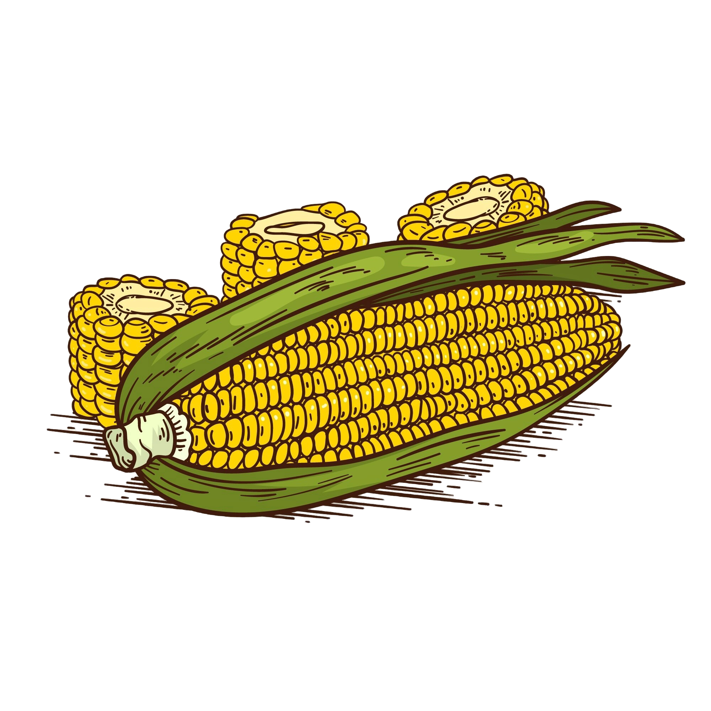

Sistem Informasi Geografis
Pemetaan Luas Panen Terhadap Jumlah Produksi Jagung di Kabupaten Kendal

Sistem Informasi Geografis: Pemetaan Luas Panen Terhadap Jumlah Produksi Jagung di Kabupaten Kendal ini menyajikan Data Spasial yang terkait dengan lokasi geografis seperti koordinat, nama daerah dan batas wilayah. Data Atribut sebagai informasi dari nama kecamatan, jumlah luas area panen, produktivitas, serta jumlah produksi jagung di Kabupaten Kendal. Dengan adanya sistem informasi geografis ini nantinya dapat menjadi salah satu sumber informasi yang dibutuhkan untuk mendukung ketahanan pangan di Indonesia
 Desa
Desa
Kabupaten Kendal merupakan daerah kabupaten yang terletak di Provinsi Jawa Tengah dengan Kecamatan Kendal sebagai ibu kotanya. Kabupaten Kendal terletak pada 109°40'–110°18' Bujur Timur dan 6°32'–7°24' Lintang Selatan dengan luas wilayah daratan sebesar 1.002.23 km² dan luas wilayah perairan sebesar 313,20 km² dengan total luas wilayah seluas 1315,43 km². Batas wilayah administrasi Kabupaten Kendal bagian utara berbatasan dengan Laut Jawa, bagian Timur berbatasan dengan Kota Semarang dan Kabupaten Semarang, bagian selatan berbatasa langsung dengan Kabupaten Semarang dan Kabupaten Temanggung dan bagian barat berbatsan dengan Kabupaten Batang.

Di Kabupaten Kendal sendiri terdapat dari 20 Kecamatan, sebagai berikut:
Kabupaten Kendal terdiri dari 20 kecamatan, 20 kelurahan, dan 266 desa. Dengan jumlah penduduk sebesar 1.069.595 jiwa yang terdiri dari 537.626 orang laki-laki atau 50,26% dan 531.969 orang perempuan atau 49,74%.
Jagung (Zea mays) adalah tanaman pangan yang berasal dari Amerika dan kini ditanam di berbagai negara di dunia sebagai salah satu sumber makanan utama. Tanaman ini termasuk dalam keluarga rumput-rumputan (Poaceae) dan memiliki banyak varietas. Biji jagung yang kaya akan karbohidrat sering dijadikan makanan pokok, bahan pakan ternak, dan bahan baku industri, termasuk bioetanol.
Data ini diambil dari website resmi BPS Kendal
| No. | Kecamatan | Luas Area Panen (Ha) | produktivitas (Kwintal/Ha) | Produksi (Ton) |
|---|---|---|---|---|
| 1 | Rowosari | 48 | 61,7 | 296,17 |
| 2 | Weleri | 1022,2 | 66,47 | 6794,21 |
| 3 | Kangkung | 2375,68 | 69,83 | 16588,51 |
| 4 | Cepiring | 368,16 | 66,95 | 2464,69 |
| 5 | Patebon | 307,36 | 65,41 | 2010,39 |
| 6 | Kendal | 45,12 | 65,71 | 296,5 |
| 7 | Brangsong | 169,6 | 64,91 | 1100,81 |
| 8 | Kaliwungu | 75 | 62,98 | 472,32 |
| 9 | Kaliwungu Selatan | 881 | 65,29 | 5752,38 |
| 10 | Singaraja | 2326,32 | 66,58 | 15488,7 |
| 11 | Boja | 634,56 | 68,58 | 4352,06 |
| 12 | Limbangan | 427,2 | 65,95 | 2817,19 |
| 13 | Ngampel | 1090,68 | 68,98 | 7523,66 |
| 14 | Pegandon | 228 | 69,33 | 15445,8 |
| 15 | Ringinarum | 2040,56 | 65,64 | 13394,8 |
| 16 | Gemuh | 5061,8 | 69,83 | 35345,8 |
| 17 | Patean | 5607,8 | 66,99 | 35763,9 |
| 18 | Pageruyung | 3071,12 | 66,6 | 20453,7 |
| 19 | Sukorejo | 2956,32 | 62,72 | 18541,1 |
| 20 | Plantungan | 1964,8 | 68,32 | 13423,9 |
Disajikan dalam bentuk Diagram Batang